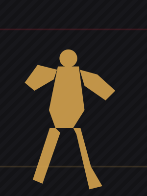

From a first-round loss to a first main event win
Nolan's UFC debut lasted 63 seconds the wrong way. His response built the résumé that got him here.
9 min readOct 2026
Tom Nolan's career arc — from a first-round knockout that earned him a UFC contract on the spot, through a brutal first-round loss in his own debut, to his first main event and his biggest win yet.

From a Contender Series knockout that Dana White called a "straight killer" performance to a plus-money underdog who got off the canvas and finished a UFC veteran — mapped fight by fight.

Turned pro and ran his record up fighting for Eternal Fighting Championship, training out of the Team Compton Training Centre in Brisbane.
Knocked out Bogdan Grad in the first round on Dana White's Contender Series Season 7; White called him a "straight killer" and signed him on the spot.
Lost to Nikolas Motta via first-round strikes at 1:03 — a fast, humbling introduction to the deep end of the UFC lightweight division.
Answered the loss by stopping Victor Martinez, then collecting decisions over Alex Reyes and Viacheslav Borshchev before beating Charlie Campbell — climbing into the rankings fight by fight.
Stepped in as a late addition to headline UFC Vegas 123 against veteran Renato Moicano, closed as a betting underdog, and finished him with strikes in round three for the biggest win of his career.
Nolan's UFC debut lasted 63 seconds the wrong way. His response built the résumé that got him here.
Stepping in after Brian Ortega withdrew looked like a reward for a veteran. It became a measuring-stick loss instead.
Dana White's praise after Nolan's Contender Series knockout looked bold at the time. Three years later, it reads about right.
Coaching adjustments and in-fight reads that shaped these career turns.
Read Corner Notes